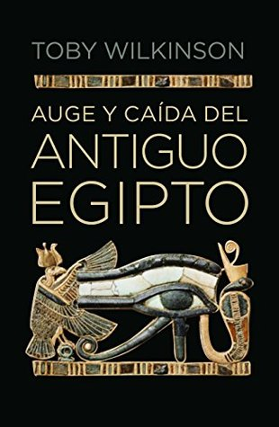

Auge y caída del antiguo Egipto (Spanish Edition)
Reseña por Jorge I. Zuluaga

Ver reseña en GoodReads (necesita cuenta)
Para mí, hay dos razones simples para considerarlo así: (1) esta escrito por una autoridad en la materia; su autor, Toby Wilkinson, no solo es un egiptólogo reconocido, sino además un escritor de divulgación afamado y premiado. Y (2) el libro está muy bien escrito, es ameno (parece una novela) y es fácil de leer para quiénes no somos expertos; creo que es difícil encontrar una mejor versión resumida de los 3.000 años de historia del mas longevo y grandioso imperio de todos los tiempos, que la que encontraran en "Auge y caída del antiguo Egipto".
Si esto es suficiente para animarlos a leer el libro, dejen de leer esta reseña y empiecen ahora consiguiendo el libro (ya no se edita así que deben conseguirlo de segunda o en formato electrónico). En caso contrario, abajo ofrezco otros detalles.
En pocas frases ¿de qué trata el libro?. El texto hace un recorrido cronológico (con algún solapamiento entre capítulos) por la "historia política" de Egipto; entendiendo aquí por "político", la sucesión de dinastías de gobernantes (reyes, reinas, faraones, gobernadores, visires, etc.), autóctonos y ajenos, desde los tiempos del Egipto protodinástico (ha. 3000 a.e.c.) hasta el final del Egipto farónico, ya en tiempo romano, con la muerte de Cleopatra VII y de sus hijos "latinoegipcios" (¿existirá ese adjetivo?).
¿Cuál es más o menos la estructura del libro?. El libro se divide en 5 partes, que cubren más o menos 5 grandes períodos de la historia de Egipto (no todos ¡pilas!): período pre y prodinástico, imperio antiguo, primer período intermedio, imperio medio, imperio nuevo y período grecoromano.
Cada parte se divide a su vez en 4 a 6 capítulos; capítulos cortos, fáciles de leer: una verdadera delicia para los lectores a los que nos gusta tener descansos frecuentes.
Los títulos de los capítulos y las secciones están llenos de referencias a la cultura popular: "el fin de la inocencia", "guerra y paz", "una espada de doble filo", "la era de la invención", "historia de dos ciudades", etc. ¡Punto para Wilkinson! (sé que esto parece superficial, pero todas las cosas que hagan agradable la lectura de un libro de historia ¡son bienvenidas por los aficionados!).
¿Quiénes podrían encontrar este libro entretenido?. Sin lugar a dudas ¡todos los verdaderos #KemetLovers!. O mejor: encontrar el libro agradable y útil debería constituirse en una verdadera "prueba de fuego" (una expresión que aprendí en este libro tiene origen en los rituales mágicos egipcios del viaje de los difuntos al inframundo) de tu pasión por el antiguo Egipto. Para quiénes quieran algo ligero y lleno de datos interesantes, tal vez este libro se excede en detalles y podrían aburrirse fácilmente.
Decime la verdad ¿qué es lo peor que tiene el libro?. La verdad, la verdad (y aquí puedo pecar por mi sesgo por Egipto) ¡nada!. Una vez lo empece, no pude dejar de leerlo.
Pero en honor a la verdad (que piden los que lean está reseña y no sean tan gomosos como yo) reitero lo que dije en un párrafo anterior: es cierto que en algunos apartes Wilkinson se excede en los detalles y esto puede terminar siendo agotador para la mayoría. Como sucede con la mayoría de los libros, hay capítulos que posiblemente te harán desistir. Pero, como también sucede con la mayoría de los buenos libros, después de un par de capítulos pesados, vienen otros llenos de referencias e historias apasionantes.
Leí el texto en formato Kindle y para quiénes conocen la plataforma sabrán que a veces los subrayados de otras personas son sutilmente indicados por el dispositivo. Con esto me di cuenta que la mayoría de los lectores abandonaron el libro mucho antes de la tercera parte (los subrayados dejaron de aparecer en la segunda); curiosamente es en la tercera parte cuando la cosa se pone más emocionante con la llegada del hoy denominado Imperio nuevo y las dinastías de los grandiosos "Amenhoteps" y "Tutmoses". ¡Aguanten para llegar hasta allá!
¿Cuál es la mejor parte?. Para mí la parte más emocionante es la cuarta parte ("poderío militar") que comienza con el reinado del singular Horemheb, el general que supuso la reorganización del estado después de las (a la larga) desastrosas reformas de Amenhotep IV (el famoso hereje Ajenatón) y los chapuceros intentos de dos o tres reyes intermedios (incluyendo el muy recordado e icónico Tutanjamón, más importante por su intacto ajuar funerario que por su verdadera importancia histórica). Horemheb me recordó a los dictadores militares hispanoamericanos, con los que sufrimos en el siglo XX. Su historia, sin embargo, es más contradictoria.
Esta parte cubre los grandes logros civiles y militares de los primeros Ramesidas (Ramses I, Seti I, Ramses II y III), sus conquistas, batallas y el impresionante despliegue de construcciones civiles y religiosas por todo Egipto. Estos capítulos me recordaron las mejores novelas de Santiago Posteguillo (tal vez fue por eso que disfrute tanto de esta parte).
¿Algún datico curioso que me anime a leer el libro?. Creo que el mensaje (o el dato) más interesante que me dejo la lectura de "Auge y caída del antiguo Egipto" es lo imperfecto que fueron los egipcios (o mejor, sus gobernantes). Estamos tan acostumbrados a "adorar ciegamente" al antiguo Egipto sin reconocer sus evidentes defectos, la tiranía de sus reyes, la horrenda desigualdad social, la pobreza y sufrimiento del pueblo llano (por casi 3.000 años), la vileza de su aristocracia, las guerras perdidas, las invasiones sufridas, que una historia como esta se recibe como una buena dosis de realidad para comprender de forma más equilibrada la historia de esta increíble cultura.
Si terminaran admirando más o tal vez odiando al antiguo Egipto es difícil saberlo; pero es definitivo que si te gusta la historia de Egipto, debes leer el libro de Wilkinson.
* El #KemetLovers se lo robe a mi profesora de Egiptología, Elizabeth Noreña. Síganla en en instagram @elianubis, en Twitter @elianubis y en su genial sitio web https://egiptologiamedellin.com.